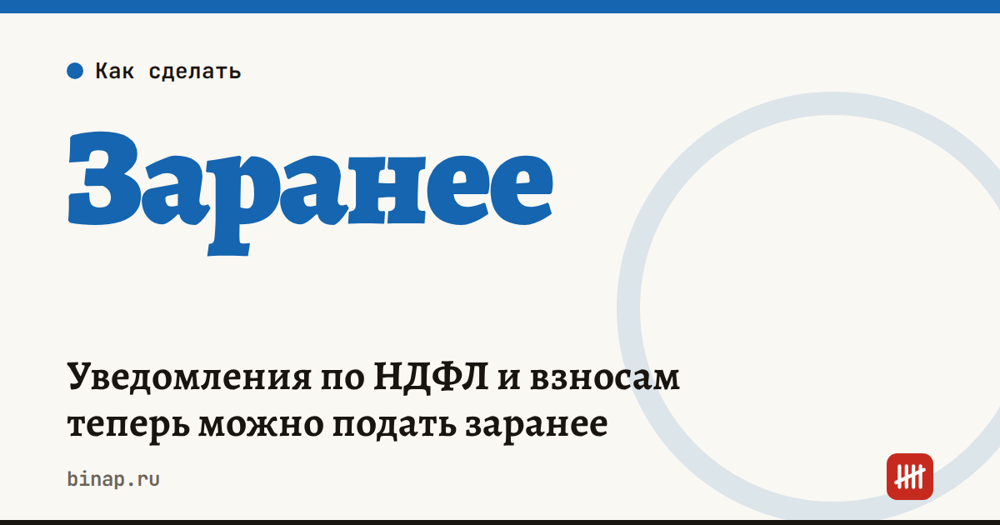

Уведомления по НДФЛ и взносам теперь можно подать заранее

Работодатели на ЕНП каждый месяц подают уведомления об исчисленных суммах: по НДФЛ — дважды в месяц, по взносам — раз в месяц. С 1 сентября 2026 года (закон от 28.11.2025 № 425-ФЗ) их можно подать заранее — сразу за несколько периодов вперёд в пределах текущего года.
Как зачитываются деньги с ЕНС:
- Если на едином счёте денег нет, списание пройдёт не позднее 3 рабочих дней после того, как положительное сальдо появится.
- Если деньги есть: по НДФЛ — не позднее 2-го рабочего дня после окончания периода из уведомления, по взносам — не позднее 3-го числа месяца, в котором наступает срок уплаты.
Кому удобно: ИП и небольшим компаниям со стабильным фондом оплаты труда, где НДФЛ и взносы из месяца в месяц почти не меняются.
Что сделать:
- Посчитайте НДФЛ и взносы за оставшиеся периоды 2026 года.
- Подайте досрочное уведомление через бухгалтерский сервис или личный кабинет.
- Если зарплата изменится — подайте уточнённое уведомление за этот период.
Ближайший срок, который это закрывает: 5 октября — уведомление по НДФЛ, удержанному с 23 по 30 сентября.